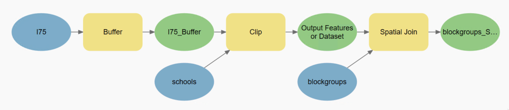

Run ArcPy Functions
Contents
Run ArcPy Functions#
Here, we will look at several arcpy functions, including ListFeatureClasses, Buffer,
Clip, and SpatialJoin. Before we discuss how to run these arcpy functions, consider
the question “which toolbox or toolboxes do they belong to?” As mentioned earlier, the answer to this
question will determine the name of the function.
1. ListFeatureClasses()#
ListFeatureClasses
returns a Python list consists of names of feature classes in the current workspace defined in the environment. It also supports additional parameters (arguments) to control which feature classes will
be in the returned list.
1.1 Basic usage#
As usual, we need to import the arcpy package first.
import arcpy
Then, we define the workspace and set it to be the class_data.gdb geodatabase.
gdb_worksp = r"../data/class_data.gdb"
arcpy.env.workspace = gdb_worksp
Note
The workspace environment (i.e., arcpy.env object) must be set before using ListFeatureClasses.
arcpy.ListFeatureClasses()
['county_boundary',
'hospitals',
'schools',
'I75',
'roads',
'law_enforcement',
'major_highways',
'zip_boundaries',
'major_roads',
'landuse',
'crash',
'blockgroups']
1.2 Optional keyword arguments#
We can give additional arguments to the function to have more control over what feature classes are returned.
wild_card: a string with an asterisk*specifying the name pattern.feature_type: a string specifying feature type, i.e., Point, Line, Polygon.feature_dataset: a string specifying the name of a particular feature dataset.
# return feature class whose name starts with "major"
arcpy.ListFeatureClasses("major*")
['major_highways', 'major_roads']
# return feature class whose name ends with "roads"
arcpy.ListFeatureClasses("*roads")
['roads', 'major_roads']
As shown in the two examples above, the position of the asterisk * determines the pattern of the wildcard.
Supply arguments to functions
Most of arcpy functions are defined with keyword arguments, i.e., the argument itself has a name.
Therefore, when calling a function, we can specify the arguments in two ways:
(1). by position: set arguments based on their positions in the function definition. If needed, skip an argument by either an empty string ("") or None.
(2). by name: set arguments explicitly based on their names. In this case, you don’t need to follow the same order as how they were defined in the original function.
The following examples call the same function ListFeatureClasses using positional arguments.
Pay attention to the difference on how they skip the first argument, i.e., wild_card.
# skipping using an empty string
arcpy.ListFeatureClasses("", "Line") # return line feature classes
['I75', 'roads', 'major_highways', 'major_roads']
# skipping using None
arcpy.ListFeatureClasses(None, "Point") # return point feature classes
['hospitals', 'schools', 'law_enforcement', 'crash']
Note
None is a built-in Python type. Try run:
type(None)
If no arguments are skipped, you need to set arguments based on their original definition. View the documentation (signature) of the function to know which arguments need to be defined and in what order. Recall the methods we introduced in the previous page.
# specifying both arguments by position
arcpy.ListFeatureClasses("*s", "Point")
['hospitals', 'schools']
Alternatively, we can set arguments using their names.
# skip the first argument with no empty string or None
arcpy.ListFeatureClasses(feature_type="Polygon")
['county_boundary', 'zip_boundaries', 'landuse', 'blockgroups']
According to PEP8
Different than assigning values to variables, in the code above,
there are NO white spaces around the assignment operator,
i.e., feature_type="Point".
In a function call, if all arguments are named (i.e., keyword arguments),
the order of the arguments can be ignored.
For example, in the function below, we don’t need to follow the order
in the definition, i.e., first set wild_card
then set feature_type, because they are both keyword arguments.
arcpy.ListFeatureClasses(feature_type="Point", wild_card="*s")
['hospitals', 'schools']
The return list will be empty if no feature classes match the setting.
For example, there is no feature dataset named “test” in the class
geodatabase.
arcpy.ListFeatureClasses(feature_dataset="test")
[]
Now, let’s look at some commonly used geoprocessing functions. We will revisit an example that we previously solved by ModelBuilder.
We will reproduce the result of the following model using arcpy functions.

2. Buffer#
I75 = "I75" # input features
I75_2mi_buff = "I75_2mi_buff" # output feature class
arcpy.Buffer_analysis(I75, I75_2mi_buff, "2 Miles")
Tip
Create variables to store values of arguments, especially for the input and output feature class. It is helpful for us reference them later. It is also a good practice from a data management perspective.
3. Clip#
school = "schools"
school_2mi_I75 = "schools_2mile_I75"
arcpy.analysis.Clip(school, # input features
I75_2mi_buff, # clipping features
school_2mi_I75) # output feature class
4. SpatialJoin#
blkgrp = "blockgroups"
bg_school_spjoin = "bg_school_spjoin"
arcpy.SpatialJoin_analysis(blkgrp, # target features
school_2mi_I75, # join features
bg_school_spjoin, # output feature class
"", # join operation
"KEEP_COMMON") # join type
To see how many output features are there, we can use the either GetCount_management()
or management.GetCount().
# number of block groups matching the criteria
print(arcpy.GetCount_management(bg_school_spjoin))
19
5. Add Exception Handling#
try:
arcpy.Toolname_toolboxalias
except Exception as e:
print(e)
try:
blkgrp = "blockgroups"
bg_school_spjoin = "bg_school_spjoin"
arcpy.SpatialJoin_analysis(
blkgrp, school_2mi_I75, bg_school_spjoin,
"", "KEEP_COMMON"
)
arcpy.GetCount_management(bg_school_spjoin)
except Exception as e: # any type of Exception will be captured
print("Error: " + str(e))
print("This message proves the script continues moving on after the ERROR.")
Error: Failed to execute. Parameters are not valid.
ERROR 000725: Output Feature Class: Dataset ../data/class_data.gdb\bg_school_spjoin already exists.
Failed to execute (SpatialJoin).
This message proves the script continues moving on after the ERROR.
5.1 Detect feature class existance#
As seen in the above cell, if the output feature class already exists in a workspace, by default, ArcPy will complain and stop executing the function.
In this situation we can use arcpy.Exist to detect the existance of a feature
class first, if already exists, use arcpy.management.Delete to delete it.
if arcpy.Exists(bg_school_spjoin):
print("Message 1: {} already exists.".format(bg_school_spjoin))
arcpy.Delete_management(bg_school_spjoin)
print("Message 2: {} has been removed.".format(bg_school_spjoin))
blkgrp = "blockgroups"
bg_school_spjoin = "blockgroups_school_spjoin"
arcpy.SpatialJoin_analysis(
blkgrp, school_2mi_I75, bg_school_spjoin,
"", "KEEP_COMMON"
)
print("Message 3: success! {} output features".format(
arcpy.GetCount_management(bg_school_spjoin)
))
Message 1: bg_school_spjoin already exists.
Message 2: bg_school_spjoin has been removed.
Message 3: success! 19 output features
5.2 Set OverwriteOutput#
Another option is to simply set env.OverwriteOutput to True.
However, be careful, enable this setting will cause arcpy to always overwrite
current feature class to write output feature class.
arcpy.env.overwriteOutput = True
if arcpy.Exists(bg_school_spjoin):
print("Message 1: {} already exists.".format(bg_school_spjoin))
blkgrp = "blockgroups"
bg_school_spjoin = "blockgroups_school_spjoin"
arcpy.SpatialJoin_analysis(
blkgrp, school_2mi_I75, bg_school_spjoin,
"", "KEEP_COMMON"
)
print("Message 2: success! {} output features".format(
arcpy.GetCount_management(bg_school_spjoin)
))
Message 1: blockgroups_school_spjoin already exists.
Message 2: success! 19 output features